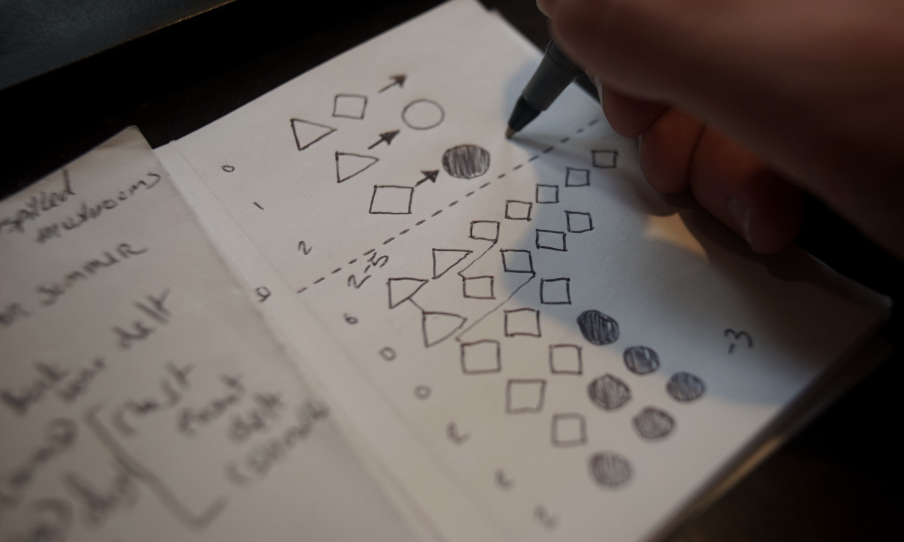
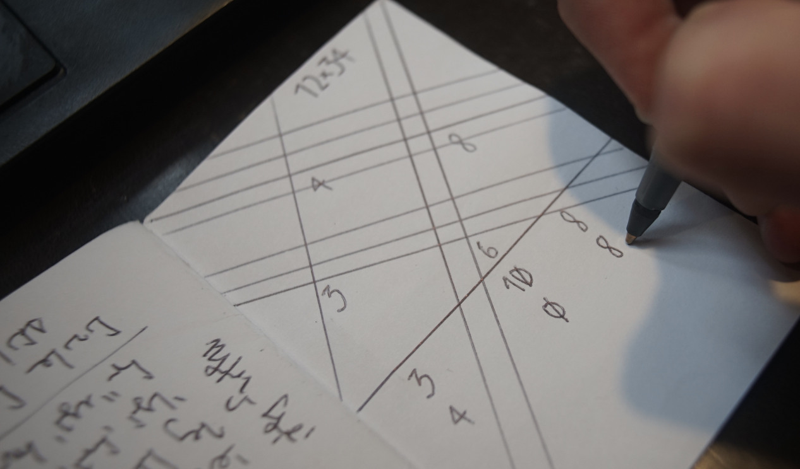
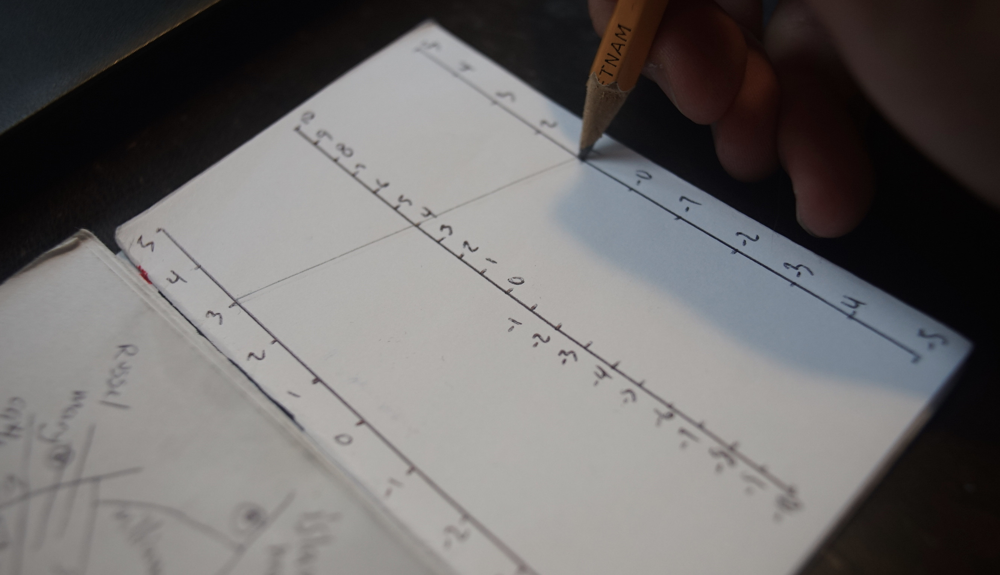
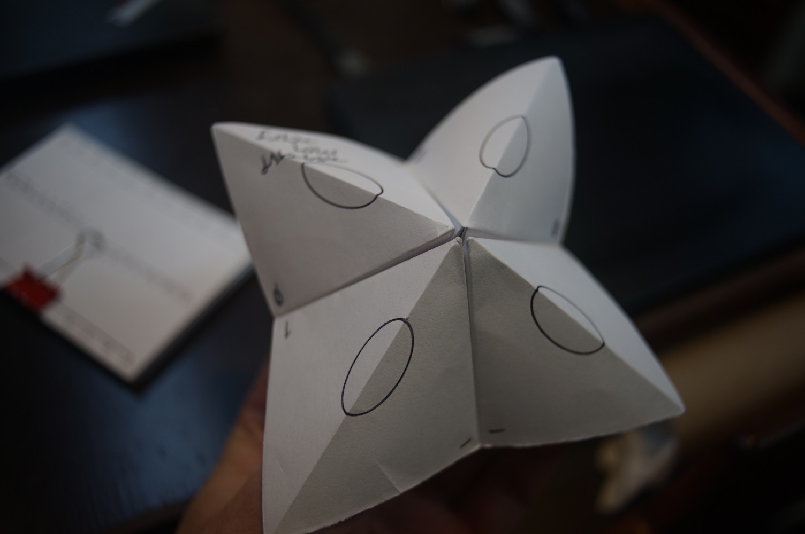
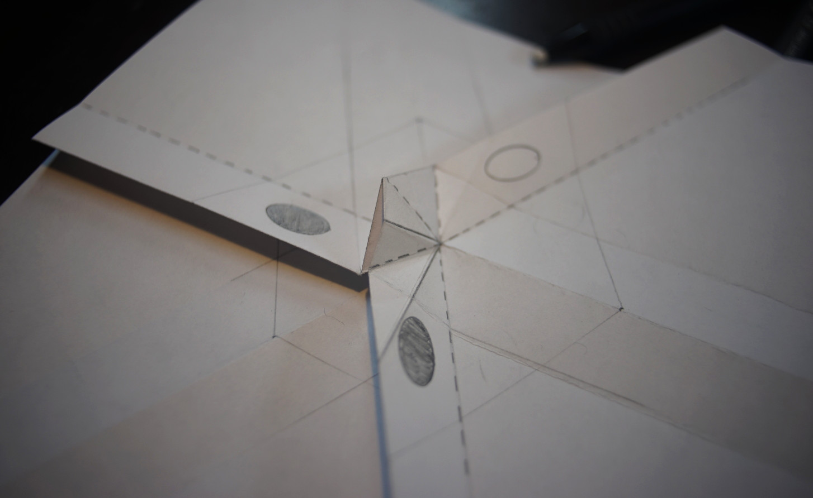
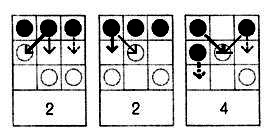
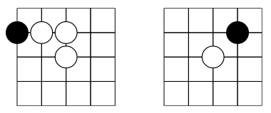

The design for a simple portable computer that only requires a pencil and a sheet of paper.

The computer consists of a pen or pencil and a sheet of paper that contains both the program as well as the state of the program during each step of the evaluation. From these primitives, we can create encrypt and store data, solve problems and even play games.
- A pen, or pencil
- A sheet of paper

Register Machine Emulator
The pen, representing the program counter, is positioned at the first line of the program. The instruction on that line is processed by modifying the value of a register, or checking if a register is Zero and then moving to the next instruction. The evaluation stops upon reaching a halt or empty instruction.
CLR(r): Set register r to Zero.INC(r): Add 1 to the register r.DEC(r): Subtract 1 from register r.CPY(a, b): Copy the register a in register b.JZ(r, i): If register r is Zero, jump to instruction i.JE(a, b, i): If the registers a and b are equal, jump to instruction i.
The classic paper ISAs are the WDR Computer and CARDIAC.

Rewriting Machine Emulator
Programs are written as a set of rules, and the initial content of a unordered bag. During evaluation, rules are tested in a sequence from the first to the last, when the bag contains a rule's left-side, the symbols are replaced by those in the right-side, and search for the next rule starts back again from the beginning.
The advantages over the register machine are that it has only one operation, and does away with textual language altogether. To find more exciting programs, see the Pocket Rewriting Computer.
LHS -> RHS: Replace the LHS with the RHS.

Multiplication Arithmetic Unit
A visual multiplication program that relies on counting the intersection of lines to get the product from multiplication of large numbers. For digits larger than 4, lines of a different color, or folds in a different direction, can reduce clutter.

Addition Arithmetic Unit
A visual addition program that relies on nomography to get the sum from two numbers.

Random Memory Access
A key-pair database with 16 cells of memory can be made with a paku-paku(fortune teller), assigning a two-part notation with a key for each of the four outside faces, and eight inside faces, can make memory reading/writing more efficient.

Logic Gates
Functionaly logic gates can be implemented in flat origami as described by Inna Zakharevich's paper. I keep a copy of the instructions here.
Randomness Generator
Useful little trick to make a quick dice by marking the end of a six-sided pencil with the nail of your thumb or a sharp edge. As to not damage the lead, it's probably best to roll on a soft surface.
Diceware is a physical way to generate passwords without relying on an untrusted computer program. You roll physical dice and then consult a diceware dictionary to choose a random word. This helps generate memorable passwords that are fairly strong and also avoids the need to trust any third-party site or program.
Pen & Paper Games
Hexapawn
Hexapawn is played on a rectangular board of variable size, for example on a 3×3 board or on a chessboard. On a board of size n×m, each player begins with m pawns, one for each square in the row closest to them. The pawns can only move forwards, unless they are attacking, in which case they move diagonally forwards and remove the piece in that position from the board. The winner is the first player to get one piece to the opposite side of the board or to wipe out all the opponent’s pieces. The human player always plays white and always goes first. ~
Each time the machine loses a game, you remove the counter that corresponds to the last move that the machine took. If there is only one counter left in this box, remove the counter that decided its previous move. This means that the machine will never again take the same losing moves. When the machine wins, no changes are made to the boxes, but each time the machine loses another counter is removed. Very quickly the machine becomes unbeatable.

Sprouts
The game is played by two players starting with a few spots drawn on a sheet of paper. Players take turns, where each turn consists of drawing a line between two spots, or from a spot to itself, and adding a new spot somewhere along the new line. In so-called normal play, the player who makes the last move wins. In misère play, the player who makes the last move loses.
- A new line cannot cross itself or any other line.
- No spot may have more than three lines attached to it.
Pipelayer
The game is played with two grids of dots that are slightly offset from one another. To win a player must make a continuous connection from one side of the board to the other in the long direction for his color of dots.
- The players take turns connecting two dots.
- A player can only connect dots that are adjacent horizontally or vertically and their own color.
Capture
Capture is played on a grid of dots. The players take turns connecting dots that are horizontally or vertically adjacent. If a player can complete a square then they capture that square. You must draw another line after making a capture. A player may make multiple captures in a single turn. After the last capture they must still connect two dots.
- The players take turns connecting two dots.
- The player who captured the most squares wins.
Peg Solitaire
Pegs is played on a shape made of pegs. The standard game fills the entire board with pegs except for the central hole. The objective is, making valid moves, to empty the entire board except for a solitary peg in the central hole.
- A valid move is to jump a peg orthogonally over an adjacent peg into a hole two positions away and then to remove the jumped peg.
Two players sit on opposite sides of a go board and take turns.
A Phutball game begins with a single black stone, or the ball, placed at the center intersection of a rectangular grid. On each turn, a player may either:
- Place a white stone on any vacant intersection, or
- Perform a sequence of jumps.
To jump, the ball must be adjacent to one or more white stones. It is moved in a horizontal, vertical, or diagonal to the first vacant intersection beyond one or a sequence of white stones, the jumped white stones are then removed. If a jump is performed, the same player may continue jumping as long as the ball continues to be adjacent to at least one white stone, or may end the turn at any point. Jumping is not obligatory.

The game is over when a jump sequence ends on or over the edge of the board closest to the opponent (the opponent’s goal line) at which point the player who performed the jumps wins. It is legal for a jump sequence to step onto but not over one’s own goal line.
The game was created by John Conway, also creator of Fractran and Game Of Life.
incoming: hpda nibble dice paper computing virtual machines 2025